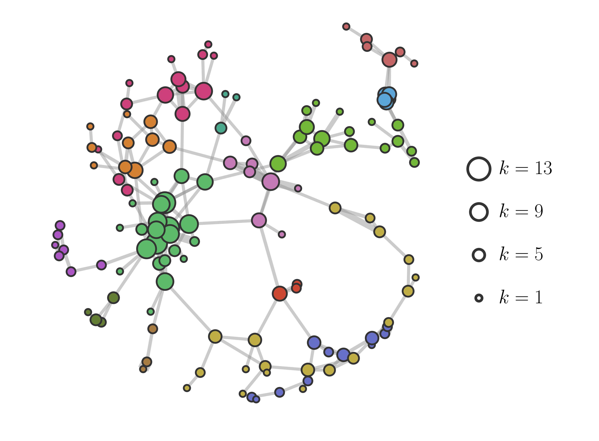
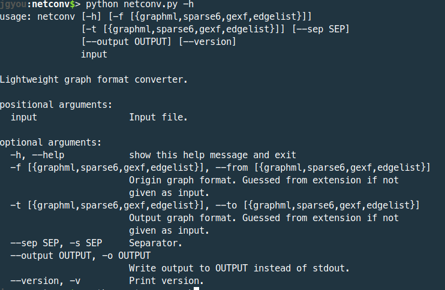
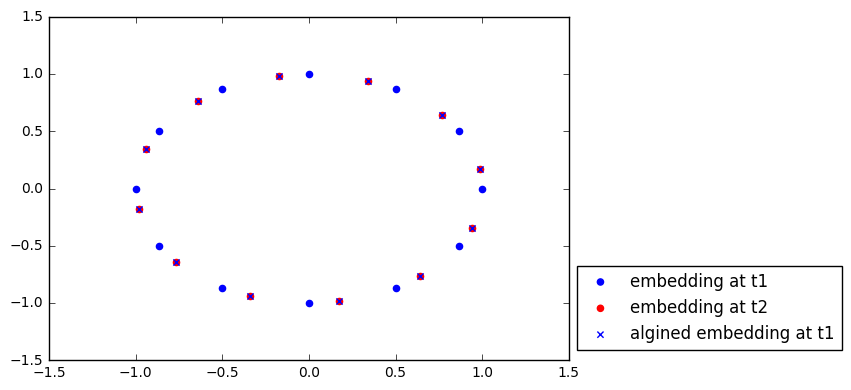
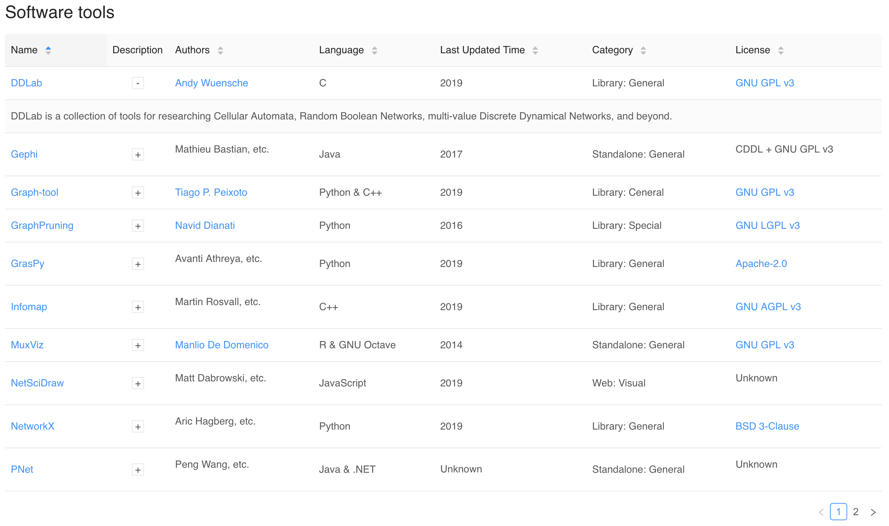

OpenNetSci Hackathon 2019 Projects
These projects were developed at the
PLOS
OpenNetSci Hackathon 2019, in Burlington VT.
The gatekeeper network of science

Tim Larock
,
Brennan Klein
,
Guillaume St-Onge
,
Diny Mistry
,
Memo de Anda
,
Szymon Talaga
,
Vincent Thibeault
,
Xavier Roy-Pomerleau
Scraping and analyzing members of editorial boards of scientific journals.
Project URL
netconv

Chia-Hung Yang
,
Leonardo Torres
,
Stefan McCabe
,
Jean-Gabriel Young
Lightweight graph format converter.
Project URL
temporal_embedding_matching

Jisung Yoon
,
Yong-Yeol Ahn
A script that aligns two sets of network embeddings even when the sets do not exactly match.
Project URL
Network code repository

Tzu-Chi Yen
,
Nesreen K. Ahmed
,
Yong-Yeol Ahn
,
Tiago P. Peixoto
,
Jean-Gabriel Young
This is a centralized repository for network analysis tools, so to speak, the "awesome list" of network analysis recipes.
Project URL
Sponsors
Generator Maker Space
apatania@iu.edu
jgyou@umich.edu